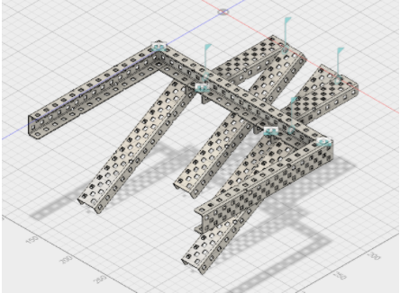
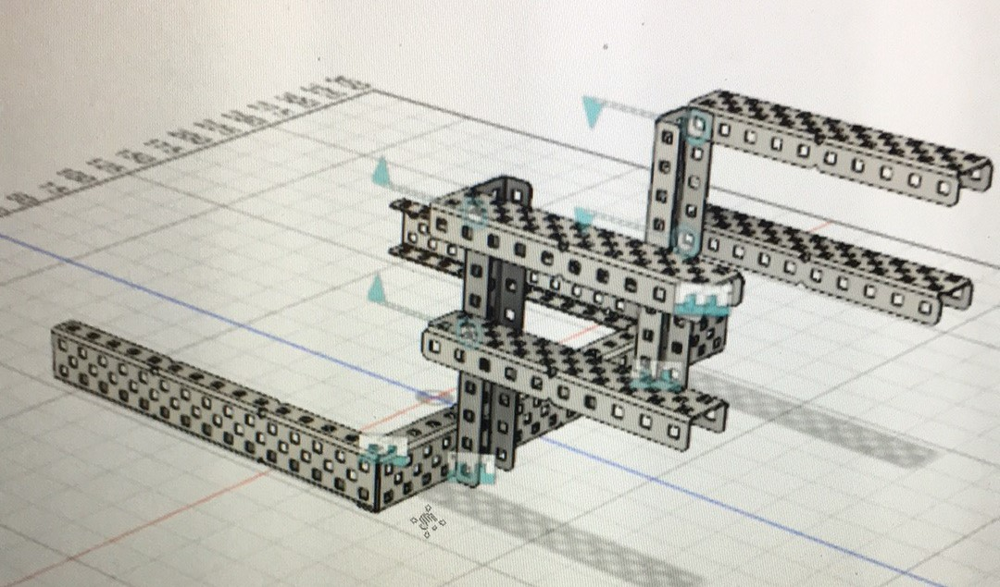
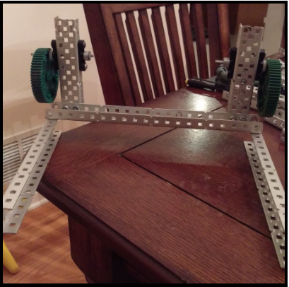
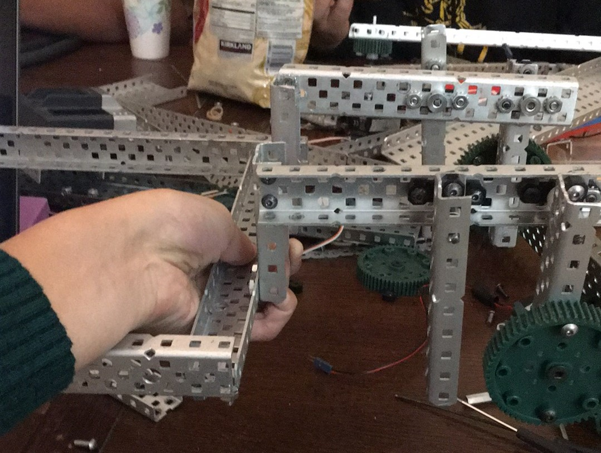

I used Autodesk Fusion to digitally CAD some designs for our mobile goal lift
This iteration attempted to solve our problem of not being able to fit the mobile goal holder between the drive by moving the holder above the 4 bar, so it would go over the drive. This design required the mobile goal to be raised fairly high, which posed issues with the motors not having enough torque to raise it.
This is the CAD for the second picture in the Prototyping column. While building it, I realized an issue with the CAD was that the 4 bar could not be horizontal in order to attach correctly to the drive so the prototype ended up straying from the CAD.
I built these prototypes of the mobile goal lift. My designs sometimes strayed from the original CAD when problems arose while building
This is one of my early mobile goal designs. An axle goes through one of the outer holes of the gear and the metal connecting to the mobile goal holder so that as the gear rotates, the mobile goal holder is moved up while staying in the same orientation by gravity. Eventually we decided not to go with it since it provided little horizontal motion and we also could not fit it between our drive.
This iteration is close to the one we eventually ended with. The mobile goal holder was moved closer to the 4-bar to reduce torque created by the weight of the mobile goal, the shape of the holder was changed, and some proportions were changed when we moved into our final design.
